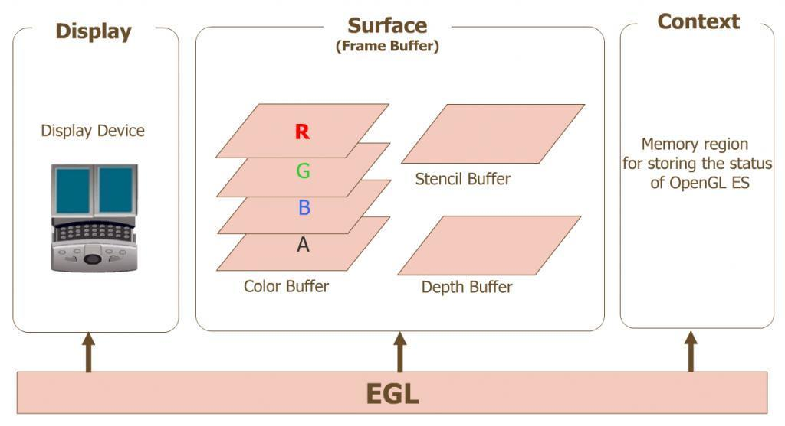
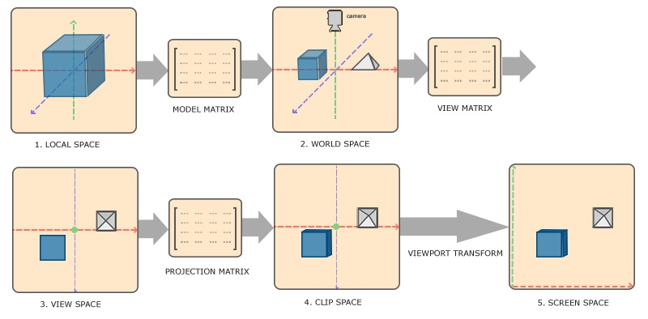
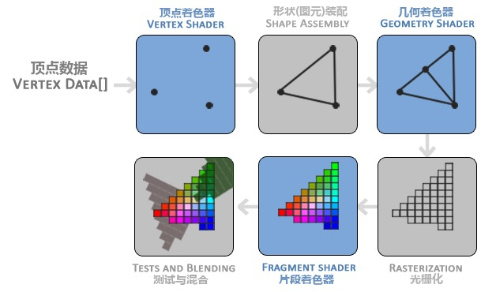

<!DOCTYPE html>
<html>
<head><meta name="generator" content="Hexo 3.9.0">
  <meta charset="utf-8">
  
  <title>Android OpenGL ES（一）开发入门 | what is your main focus for today?</title>
  <meta name="viewport" content="width=device-width, initial-scale=1, maximum-scale=1">
  <meta name="description" content="早就听过大名鼎鼎的 OpenGL，却迟迟没有实践学习，有些惭愧。今天开始通过实践+博文方式学习掌握 OpenGL。此文对于 OpenGL 的学习分为以下部分：  OpenGL 基础概念 OpenGL 坐标系理解 OpenGL 渲染管线 OpenGL 着色语言">
<meta name="keywords" content="OpenGL">
<meta property="og:type" content="article">
<meta property="og:title" content="Android OpenGL ES（一）开发入门">
<meta property="og:url" content="http://yhaowa.gitee.io/yhaowa/eeb650a2/index.html">
<meta property="og:site_name" content="what is your main focus for today?">
<meta property="og:description" content="早就听过大名鼎鼎的 OpenGL，却迟迟没有实践学习，有些惭愧。今天开始通过实践+博文方式学习掌握 OpenGL。此文对于 OpenGL 的学习分为以下部分：  OpenGL 基础概念 OpenGL 坐标系理解 OpenGL 渲染管线 OpenGL 着色语言">
<meta property="og:locale" content="zh-CN">
<meta property="og:image" content="http://yhaowa.gitee.io/yhaowa/img/1.jpeg">
<meta property="og:image" content="http://yhaowa.gitee.io/yhaowa/img/15.jpg">
<meta property="og:image" content="http://yhaowa.gitee.io/yhaowa/img/16.jpg">
<meta property="og:image" content="http://yhaowa.gitee.io/yhaowa/img/qrcode.jpg">
<meta property="og:updated_time" content="2020-12-06T06:59:08.614Z">
<meta name="twitter:card" content="summary">
<meta name="twitter:title" content="Android OpenGL ES（一）开发入门">
<meta name="twitter:description" content="早就听过大名鼎鼎的 OpenGL，却迟迟没有实践学习，有些惭愧。今天开始通过实践+博文方式学习掌握 OpenGL。此文对于 OpenGL 的学习分为以下部分：  OpenGL 基础概念 OpenGL 坐标系理解 OpenGL 渲染管线 OpenGL 着色语言">
<meta name="twitter:image" content="http://yhaowa.gitee.io/yhaowa/img/1.jpeg">
  
    <link rel="alternative" href="/atom.xml" title="what is your main focus for today?" type="application/atom+xml">
  
  
    <link rel="icon" href="/favicon.png">
  
  <link rel="stylesheet" href="/yhaowa/css/style.css">
  <!--[if lt IE 9]><script src="//cdnjs.cloudflare.com/ajax/libs/html5shiv/3.7/html5shiv.min.js"></script><![endif]-->
  
</head></html>
<body>
<div id="container">
  <div id="wrap">
    <header id="header">
  <div id="banner"></div>
  <div id="header-outer" class="outer">
    <div id="header-title" class="inner">
      <h1 id="logo-wrap">
        <a href="/yhaowa/" id="logo">what is your main focus for today?</a>
      </h1>
      
    </div>
    <div id="header-inner" class="inner">
      <nav id="main-nav">
        <a id="main-nav-toggle" class="nav-icon"></a>
        
          <a class="main-nav-link" href="/yhaowa/">首页</a>
        
          <a class="main-nav-link" href="/yhaowa/archives">归档</a>
        
      </nav>
      <nav id="sub-nav">
        
          <a id="nav-rss-link" class="nav-icon" href="/atom.xml" title="RSS Feed"></a>
        
        <a id="nav-search-btn" class="nav-icon" title="Search"></a>
      </nav>
      <div id="search-form-wrap">
        <form action="//www.baidu.com/baidu" method="get" accept-charset="utf-8" class="search-form">
          <input type="search" name="word" maxlength="20" class="search-form-input" placeholder="Search">
          <input type="submit" value="" class="search-form-submit">
          <input name=tn type=hidden value="bds">
          <input name=cl type=hidden value="3">
          <input name=ct type=hidden value="2097152">
          <input type="hidden" name="si" value="yhaowa.gitee.io/yhaowa">
        </form>
      </div>
    </div>
  </div>
</header>
    <div class="outer">
      <section id="main"><article id="post-Android-OpenGL-ES（一）开发入门" class="article article-type-post" itemscope itemprop="blogPost">
  <div class="article-meta">
    <a href="/yhaowa/eeb650a2/" class="article-date">
  <time datetime="2019-06-09T12:40:06.000Z" itemprop="datePublished">2019-06-09</time>
</a>
    
  <div class="article-category">
    <a class="article-category-link" href="/yhaowa/categories/音视频/">音视频</a>
  </div>

  </div>
  <div class="article-inner">
    
    
      <header class="article-header">
        
  
    <h1 class="article-title" itemprop="name">
      Android OpenGL ES（一）开发入门
    </h1>
  

      </header>
    
    <div class="article-entry" itemprop="articleBody">
      
        <p>早就听过大名鼎鼎的 OpenGL，却迟迟没有实践学习，有些惭愧。今天开始通过实践+博文方式学习掌握 OpenGL。此文对于 OpenGL 的学习分为以下部分：</p>
<ul>
<li>OpenGL 基础概念</li>
<li>OpenGL 坐标系理解</li>
<li>OpenGL 渲染管线</li>
<li>OpenGL 着色语言</li>
</ul>
<a id="more"></a>
<h1 id="OpenGL-基础概念"><a href="#OpenGL-基础概念" class="headerlink" title="OpenGL 基础概念"></a>OpenGL 基础概念</h1><h4 id="OpenGL"><a href="#OpenGL" class="headerlink" title="OpenGL"></a>OpenGL</h4><p>OpenGL 即 Open Graphics Library，是一个功能强大、调用方便的底层图形库，它定义了跨编程语言、跨平台的专业图形程序接口，可用于二维或三维图像的处理与渲染。</p>
<p>OpenGL 是跨平台的，除了它纯粹专注的渲染外，其他内容在每个平台上都要有它的具体实现，比如上下文环境和窗口的管理就交由各个设备自己来完成。</p>
<h4 id="OpenGL-ES"><a href="#OpenGL-ES" class="headerlink" title="OpenGL ES"></a>OpenGL ES</h4><p>OpenGL ES （OpenGL for Embedded Systems）是三维图形 API OpenGL 的子集，针对手机、PDA 和游戏主机等嵌入式设备而设计。</p>
<p>Android 对应 OpenGL ES 的版本支持如下：</p>
<ul>
<li>Android 1.0 开始支持 OpenGL ES 1.0 及 1.1</li>
<li>Android 2.2 开始支持 OpenGL ES 2.0</li>
<li>Android 4.3 开始支持 OpenGL ES 3.0</li>
<li>Android 5.0 开始支持 OpenGL ES 3.1</li>
</ul>
<p>其中 OpenGL ES 1.0 是以 OpenGL 1.3 规范为基础的，OpenGL ES 1.1 是以 OpenGL 1.5 规范为基础的，而 OpenGL ES 2.0 基于 OpenGL 2.0 实现。2.x 版本相比 1.x 版本有较大差异，1.x 版本为 fixed function pipeline，即固定管线硬件，而 2.x 版本为 programmable pipeline，可编程管线硬件。</p>
<p>固定管线中原本由系统做的一部分工作，在可编程管线中必须需要自己写程序实现，具体程序为 vertex shader（顶点着色器）和 fragment shader（片元着色器）。</p>
<h4 id="OpenGL-上下文"><a href="#OpenGL-上下文" class="headerlink" title="OpenGL 上下文"></a>OpenGL 上下文</h4><p>OpenGL 是一个仅仅关注图像渲染的图像接口库，在渲染过程中它需要将顶点信息、纹理信息、编译好的着色器等渲染状态信息存储起来，而存储这些信息的数据结构就可以看作 OpenGL 的上下文。</p>
<p>调用任何 OpenGL 函数前，必须已经创建了 OpenGL Context，GL Context 存储了OpenGL 的状态变量以及其他渲染有关的信息。OpenGL 是个状态机，有很多状态变量，是个标准的过程式操作过程，改变状态会影响后续所有操作，这和面向对象的解耦原则不符，毕竟渲染本身就是个复杂的过程。OpenGL 采用 Client-Server 模型来解释 OpenGL 程序，即 Server 存储 GL Context（可能不止一个），Client 提出渲染请求，Server 给予响应，一般 Server 和 Client 都在我们的 PC 上，但 Server 和 Client 也可以是通过网络连接。</p>
<p>之后的渲染工作就要依赖这些渲染状态信息来完成，当一个上下文被销毁时，它所对应的 OpenGL 渲染工作也将结束。</p>
<h4 id="EGL"><a href="#EGL" class="headerlink" title="EGL"></a>EGL</h4><p>在 OpenGL 的设计中，OpenGL 是不负责管理窗口的，窗口的管理交由各个设备自己来完成，具体来讲，IOS 平台上使用 EAGL 提供本地平台对 OpenGL 的实现，在 Android 平台上使用 EGL 提供本地平台对 OpenGL 的实现。EGL 是 OpenGL ES 和 Android 底层平台视窗系统之间的接口，在 OpenGL 的输出与设备屏幕之间架接起一个桥梁，承担了为 OpenGL 提供上下文环境以及管理窗口的职责。</p>
<p>EGL 为双缓冲工作模式，即有一个 Back Frame Buffer 和一个 Front Frame Buffer，正常绘制的目标都是 Back Frame Buffer，绘制完成后再调用 eglSwapBuffer API，将绘制完毕的 FrameBuffer 交换到 Front Frame Buffer 并显示出来。</p>
<p>从代码层面来看，OpenGL ES 的 opengles 包下定义了平台无关的绘图指令，EGL（javax.microedition.khronos.egl）<br>则定义了控制 displays，contexts 以及 surfaces 的统一的平台接口。</p>
<ul>
<li>Display（EGLDisplay） 是对实际显示设备的抽象</li>
<li>Surface（EGLSurface）是对用来存储图像的内存区域 FrameBuffer 的抽象，包括 Color Buffer、Stencil Buffer、Depth Buffer</li>
<li>Context（EGLContext）存储 OpenGL ES 绘图的一些状态信息</li>
</ul>
<p></p>
<blockquote>
<p>使用 EGL 绘图的一般步骤：<br>获取 EGLDisplay 对象<br>初始化与 EGLDisplay 之间的连接<br>获取 EGLConfig 对象<br>创建 EGLContext 实例<br>创建 EGLSurface 实例<br>连接 EGLContext 和 EGLSurface<br>使用 GL 指令绘制图形<br>断开并释放与 EGLSurface 关联的 EGLContext 对象<br>删除 EGLSurface 对象<br>删除 EGLContext 对象<br>终止与 EGLDisplay 之间的连接</p>
</blockquote>
<p>一般来说在 Android 平台上开发 OpenGL ES 应用，无需按照上述步骤来绘制图形，可以直接使用 GLSurfaceView 控件，该控件提供了对 Display、Surface 以及 Context 的管理，大大简化了开发流程。</p>
<h4 id="OpenGL-纹理"><a href="#OpenGL-纹理" class="headerlink" title="OpenGL 纹理"></a>OpenGL 纹理</h4><p>纹理（Texture）是一个 2D 图片（甚至也有 1D 和 3D 的纹理），它可以用来添加物体的细节；你可以想象纹理是一张绘有砖块的纸，无缝折叠贴合到你的 3D 的房子上，这样你的房子看起来就像有砖墙外表了。因为我们可以在一张图片上插入非常多的细节，这样就可以让物体非常精细而不用指定额外的顶点。</p>
<h1 id="OpenGL-坐标系理解"><a href="#OpenGL-坐标系理解" class="headerlink" title="OpenGL 坐标系理解"></a>OpenGL 坐标系理解</h1><p>OpenGL 要求输入的顶点坐标都是标准化设备坐标，即每个顶点的 x、y、z 都在 -1 到 1 之间，由标准化设备坐标转换为屏幕坐标的过程中会经历变换多个坐标系统，在这些特定的坐标系中，一些操作和计算可以更加方便。</p>
<p></p>
<ul>
<li><strong>1. 局部坐标</strong><br>顶点坐标起始于局部空间（Local Space），在这里称为局部坐标，是以物体某一点为原点而建立的，该坐标系仅对该物体适用，用来简化对物体各部分坐标的描述。物体放到场景中时，各部分经历的坐标变换相同，相对位置不变。</li>
<li><strong>2. 世界坐标</strong><br>局部坐标通过模型矩阵进行位移、缩放、旋转，将物体从局部变换到世界空间，并和其他物体一起相对于世界的原点摆放。</li>
<li><strong>3. 观察坐标</strong><br>将世界空间坐标转化为用户视野前方的坐标，通常是由一系列的位移和旋转的组合（观察矩阵）来完成。</li>
<li><strong>4. 裁剪坐标</strong><br>坐标到达观察空间之后，通过投影矩阵会将指定范围内的坐标变换为标准化设备坐标的范围(-1.0, 1.0)，所有在范围外的坐标会被裁剪掉。</li>
<li><strong>5. 屏幕坐标</strong><br>将裁剪坐标位于(-1.0, 1.0)范围的坐标变换到由 glViewport 函数所定义的坐标范围内，最后变换出来的坐标将会送到光栅器，将其转化为片段。</li>
</ul>
<h1 id="OpenGL-渲染管线"><a href="#OpenGL-渲染管线" class="headerlink" title="OpenGL 渲染管线"></a>OpenGL 渲染管线</h1><p>OpenGL 渲染管线流程为：顶点数据 -&gt; 顶点着色器 -&gt; 图元装配 -&gt; 几何着色器 -&gt; 光栅化 -&gt; 片段着色器 -&gt; 逐片段处理 -&gt; 帧缓冲 </p>
<p></p>
<p>OpenGL 渲染管线的流程其实就是 OpenGL 引擎渲染图像的流程，也就是说 OpenGL 引擎一步一步的将图片渲染到屏幕上的过程，渲染管线可以分为以下几个阶段：</p>
<ul>
<li><p><strong>1. 指定几何对象</strong><br>首先要了解几何图元的概念，几何图元就是点、直线、三角线等几何对象，在提供了顶点坐标后，还要确定具体要画的是点、线段还是三角形，这就要确定具体执行的绘制指令。比如 OpenGL 提供给开发者的绘制方法 glDrawArrays，这个方法的第一个参数就是指定绘制方式，可选值有：<br><strong>GL_POINTS</strong>：以点的形式进行绘制，通常用在绘制粒子效果的场景。<br><strong>GL_LINES</strong>：以线的形式进行绘制，通常用于绘制直线的场景。<br><strong>GL_TRIANGLE_STRIP</strong>：以三角形的形式进行绘制，所有二维图像的渲染都会使用这种方式。<br>具体选用哪一种绘制方式决定了 OpenGL 渲染管线的第一阶段应如何去绘制几何图元，这就是第一阶段指定几何对象。</p>
</li>
<li><p><strong>2. 顶点处理</strong><br>不论上面的几何图元是如何指定的，所有的几何数据都将会通过这个阶段。这个阶段的操作内容有：根据模型视图（即根据几何图元创建的物体）和投影矩阵进行变换来改变顶点的位置，根据纹理坐标与纹理矩阵来改变纹理坐标的位置，如果设计三维的渲染，还要处理光照计算和法线变换。<br>关键的操作就是顶点坐标变换及光照处理，每个顶点是分别单独处理的。这个阶段所接受的数据是每个顶点的属性特征，输出的则是变换后的顶点数据。</p>
</li>
<li><p><strong>3. 图元组装</strong><br>在顶点处理之后，顶点的全部属性都已经被确定。在这个阶段顶点将会根据应用程序设定的图元规则如 GL_POINTS 、GL_TRIANGLES(三角形) 等被组装成图元。</p>
</li>
<li><p><strong>4. 珊格化操作</strong><br>在图元组装后会传递过来图元数据，到目前为止，这些图元信息还只是顶点而已：顶点处都还没有“像素点”、直线段端点之间是空的、多边形的边和内部也是空的，光栅化的任务就是构造这些。<br>这个阶段会将图元数据分解成更小的单元并对应于帧缓冲区的各个像素，这些单元称为片元，一个片元可能包含窗口颜色、纹理坐标等属性。片元的属性则是图元上的顶点数据等经过插值而确定的，这就是珊格化操作，也就是确定好每一个片元是什么。</p>
</li>
<li><p><strong>5. 片元处理</strong><br>珊格化操作构造了像素点，这个阶段就是处理这些像素点，根据自己的业务处理（比如提亮、饱和度调节、对比度调节、高斯模糊等）来变换这个片元的颜色。</p>
</li>
<li><p><strong>6. 逐片段处理</strong><br>进行剪切、Alpha 测试、 模版测试、深度测试、混合等处理，这些操作将会最后影响其在帧缓冲区的颜色值。</p>
</li>
<li><p><strong>7. 帧缓冲操作</strong><br>此阶段主要执行帧缓冲的写入操作，也是渲染管线的最后一步，负责将最终的像素点写到帧缓冲区。</p>
</li>
</ul>
<p>上面提到 OpenGL ES 2.0 版本相比之前版本，提供了可编程的着色器来代替 1.x 版本渲染管线的某些阶段，具体为：</p>
<ul>
<li>Vertex Shader（顶点着色器）用于替换顶点处理阶段</li>
<li>Fragment Shader（片元着色器）用于替换片元处理阶段</li>
</ul>
<h1 id="OpenGL-着色语言"><a href="#OpenGL-着色语言" class="headerlink" title="OpenGL 着色语言"></a>OpenGL 着色语言</h1><p>OpenGL 着色语言 GLSL 全称为 OpenGL Shading Language，是为了实现着色器的功能而向开发人员提供的一种开发语言，语法与 C 语言类似，下面分为以下几点来学习 GLSL：</p>
<ul>
<li><strong>1. 基本数据类型</strong></li>
</ul>
<blockquote>
<p>void：空类型，即不返回任何值<br>bool：布尔类型，true/false<br>int：带符号的整数，signed integer<br>float：带符号的浮点数，signed scalar<br>vec2、vec3、vec4：n-维浮点数向量<br>bvec2、bvec3、bvec4：n-维布尔向量<br>ivec2、ivec3、ivec4：n-维整数向量<br>mat2、mat3、mat4：2x2、3x3、4x4 浮点数矩阵<br>sampler2D：2D 纹理<br>samplerCube：盒纹理</p>
</blockquote>
<p>其中 float 可指定精度：</p>
<blockquote>
<p>high：32bit，一般用于顶点坐标（vertex Coordinate）<br>medium：16bit，一般用于纹理坐标（texture Coordinate）<br>low：8bit，一般用于颜色表示（color）</p>
</blockquote>
<ul>
<li><strong>2. 变量修饰符</strong></li>
</ul>
<blockquote>
<p>none：(默认的可省略)本地变量，可读可写，函数的输入参数既是这种类型<br>const：声明变量或函数的参数为只读类型<br>attribute：用于保存顶点或法线数据,它可以在数据缓冲区中读取数据，仅能用于顶点着色器<br>uniform：在运行时 shader 无法改变 uniform 变量，一般用来放置程序传递给 shader 的变换矩阵，材质，光照参数等等，可用于顶点着色器和片元着色器<br>varying：用于修饰从顶点着色器向片元着色器传递的变量</p>
</blockquote>
<p>要注意全局变量限制符只能为 const、attribute、uniform 和 varying 中的某一个，不可复合。</p>
<ul>
<li><strong>3. 内置变量</strong></li>
</ul>
<p>GLSL 程序使用一些特殊的内置变量与硬件进行沟通，他们大致分成两种，一种是 input 类型,他负责向硬件(渲染管线)发送数据；另一种是 output 类型，负责向程序回传数据，以便编程时需要。<br>顶点着色器中 output 类型的内置变量如下：</p>
<blockquote>
<p>highp vec4  gl_Position：放置顶点坐标信息<br>mediump float gl_PointSize：需要绘制点的大小,(只在gl.POINTS模式下有效)</p>
</blockquote>
<p>片元着色器中 input 类型的内置变量如下：</p>
<blockquote>
<p>mediump vec4 gl_FragCoord;：片元在 framebuffer 画面的相对位置<br>bool gl_FrontFacing：标志当前图元是不是正面图元的一部分<br>mediump vec2 gl_PointCoord：经过插值计算后的纹理坐标,点的范围是0.0到1.0</p>
</blockquote>
<p>片元着色器中 output 类型的内置变量如下：</p>
<blockquote>
<p>mediump vec4 gl_FragColor：设置当前片点的颜色<br>mediump vec4 gl_FragData[n]：设置当前片点的颜色,使用glDrawBuffers数据数组</p>
</blockquote>
<ul>
<li><strong>4. 内置常量</strong></li>
</ul>
<p>GLSL 提供了一些内置的常量，用来说明当前系统的一些特性。有时我们需要针对这些特性，对 shader 程序进行优化，让程序兼容度更好。</p>
<p>顶点着色器中的内置常量如下：</p>
<blockquote>
<p>const mediump int gl_MaxVertexAttribs &gt;= 8：顶点着色器中可用的最大 attributes 数<br>const mediump int gl_MaxVertexUniformVectors &gt;= 128：顶点着色器中可用的最大 uniform vectors 数<br>const mediump int gl_MaxVaryingVectors &gt;= 8：顶点着色器中可用的最大 varying vectors 数<br>const mediump int gl_MaxVertexTextureImageUnits &gt;= 0：顶点着色器中可用的最大纹理单元数<br>const mediump int gl_MaxCombinedTextureImageUnits &gt;= 8：表示最多支持多少个纹理单元</p>
</blockquote>
<p>片元着色器中的内置常量如下：</p>
<blockquote>
<p>const mediump int gl_MaxTextureImageUnits &gt;= 8：片元着色器中能访问的最大纹理单元数<br>const mediump int gl_MaxFragmentUniformVectors &gt;= 16：片元着色器中可用的最大 uniform vectors 数<br>const mediump int gl_MaxDrawBuffers = 1：表示可用的 drawBuffers 数,在 OpenGL ES 2.0 中这个值为 1, 在将来的版本可能会有所变化</p>
</blockquote>
<p>上面这些值的大小取决于 OpenGL ES 在某设备上的具体实现。</p>
<ul>
<li><strong>5. 内置函数</strong></li>
</ul>
<blockquote>
<p>通用函数：abs、floor、min、max 等，参数可传入 float/vec2/vec3/vec4 类型<br>角度函数：sin、cos 等，参数可传入 float/vec2/vec3/vec4 类型<br>指数函数：pow、log 等，参数可传入 float/vec2/vec3/vec4 类型<br>几何函数：distance、dot 等，参数可传入 float/vec2/vec3/vec4 类型<br>矩阵函数：matrixCompMult，参数传入 mat 类型<br>向量函数：lessThan、equal 等，参数可传入 vec2/vec3/vec4 类型<br>纹理函数：texture2D、texture2DProj 等</p>
</blockquote>
<p>更详细的内置函数介绍可去官方文档查看，在此只简单列一下大致种类。</p>
<h5 id="参考文章："><a href="#参考文章：" class="headerlink" title="参考文章："></a>参考文章：</h5><p><a href="https://item.jd.com/12292642.html" target="_blank" rel="noopener">《音视频开发进阶指南 - 基于Android与IOS平台的实践》</a><br><a href="https://baike.baidu.com/item/OpenGL/238984?fr=aladdin" target="_blank" rel="noopener">OpenGL 百度百科</a><br><a href="https://blog.csdn.net/qq_36383623/article/details/89315921" target="_blank" rel="noopener">OpenGL Context（渲染上下文）</a><br><a href="https://baike.baidu.com/item/OpenGL%20ES" target="_blank" rel="noopener">OpenGL ES 百度百科</a><br><a href="https://blog.csdn.net/weixin_41101173/article/details/80036809" target="_blank" rel="noopener">在Android中使用OpenGL ES进行开发第（一）节：概念先行</a><br><a href="https://blog.csdn.net/jackie03/article/details/7298682" target="_blank" rel="noopener">Android OpenGL ES（四）:关于EGL</a><br><a href="https://blog.csdn.net/qq_35370018/article/details/80156643" target="_blank" rel="noopener">初学OpenGL（4）：纹理</a><br><a href="https://blog.csdn.net/u011153817/article/details/51899091" target="_blank" rel="noopener">OpenGL各坐标系及模型矩阵、投影矩阵等的深入理解</a><br><a href="https://www.cnblogs.com/liangliangh/p/4116164.html" target="_blank" rel="noopener">OpenGL管线（用经典管线代说着色器内部）</a><br><a href="https://blog.csdn.net/jeffasd/article/details/77989274" target="_blank" rel="noopener">OpenGL shader GLSL 中文手册</a><br><a href="https://learnopengl-cn.github.io/01%20Getting%20started/08%20Coordinate%20Systems/" target="_blank" rel="noopener">坐标系统</a></p>
<p></p>
<center>关注公众号，Get 更多知识点</center>

      
    </div>
    <footer class="article-footer">
      
        <a data-url="http://yhaowa.gitee.io/yhaowa/eeb650a2/" data-id="ckjk83zsn000l0scajk8g3gka" class="article-share-link" data-share="baidu" data-title="Android OpenGL ES（一）开发入门">分享到</a>
      

      

      
  <ul class="article-tag-list"><li class="article-tag-list-item"><a class="article-tag-list-link" href="/yhaowa/tags/OpenGL/">OpenGL</a></li></ul>

    </footer>
  </div>
  
    
<nav id="article-nav">
  
    <a href="/yhaowa/2296ca3/" id="article-nav-newer" class="article-nav-link-wrap">
      <strong class="article-nav-caption">下一篇</strong>
      <div class="article-nav-title">
        
          Android OpenGL ES（二）绘制三角形
        
      </div>
    </a>
  
  
    <a href="/yhaowa/c75061d/" id="article-nav-older" class="article-nav-link-wrap">
      <strong class="article-nav-caption">上一篇</strong>
      <div class="article-nav-title">Android 知识简记</div>
    </a>
  
</nav>

  
</article>

</section>
      
      <aside id="sidebar">
  
    
  <div class="widget-wrap">
    <h3 class="widget-title">分类</h3>
    <div class="widget">
      <ul class="category-list"><li class="category-list-item"><a class="category-list-link" href="/yhaowa/categories/Android/">Android</a><span class="category-list-count">13</span></li><li class="category-list-item"><a class="category-list-link" href="/yhaowa/categories/Framework/">Framework</a><span class="category-list-count">10</span></li><li class="category-list-item"><a class="category-list-link" href="/yhaowa/categories/Java/">Java</a><span class="category-list-count">3</span></li><li class="category-list-item"><a class="category-list-link" href="/yhaowa/categories/深度学习/">深度学习</a><span class="category-list-count">1</span></li><li class="category-list-item"><a class="category-list-link" href="/yhaowa/categories/音视频/">音视频</a><span class="category-list-count">11</span></li></ul>
    </div>
  </div>

  
    
  <div class="widget-wrap">
    <h3 class="widget-title">标签云</h3>
    <div class="widget tagcloud">
      <a href="/yhaowa/tags/ANativeWindow/" style="font-size: 10px;">ANativeWindow</a> <a href="/yhaowa/tags/APT/" style="font-size: 10px;">APT</a> <a href="/yhaowa/tags/Ashmem/" style="font-size: 10px;">Ashmem</a> <a href="/yhaowa/tags/Autolock/" style="font-size: 10px;">Autolock</a> <a href="/yhaowa/tags/BinderProxy/" style="font-size: 10px;">BinderProxy</a> <a href="/yhaowa/tags/BpBinder/" style="font-size: 10px;">BpBinder</a> <a href="/yhaowa/tags/BufferQueue/" style="font-size: 10px;">BufferQueue</a> <a href="/yhaowa/tags/COW/" style="font-size: 10px;">COW</a> <a href="/yhaowa/tags/Caffe/" style="font-size: 10px;">Caffe</a> <a href="/yhaowa/tags/FFmpeg/" style="font-size: 20px;">FFmpeg</a> <a href="/yhaowa/tags/Fmod/" style="font-size: 10px;">Fmod</a> <a href="/yhaowa/tags/GUI/" style="font-size: 10px;">GUI</a> <a href="/yhaowa/tags/Glide/" style="font-size: 10px;">Glide</a> <a href="/yhaowa/tags/Gralloc/" style="font-size: 10px;">Gralloc</a> <a href="/yhaowa/tags/IPCThreadState/" style="font-size: 10px;">IPCThreadState</a> <a href="/yhaowa/tags/JavaPoet/" style="font-size: 10px;">JavaPoet</a> <a href="/yhaowa/tags/LMK/" style="font-size: 10px;">LMK</a> <a href="/yhaowa/tags/Linux-IPC/" style="font-size: 10px;">Linux IPC</a> <a href="/yhaowa/tags/Linux-driver/" style="font-size: 10px;">Linux driver</a> <a href="/yhaowa/tags/Mutex/" style="font-size: 10px;">Mutex</a> <a href="/yhaowa/tags/OpenGL/" style="font-size: 12.5px;">OpenGL</a> <a href="/yhaowa/tags/ProcessState/" style="font-size: 10px;">ProcessState</a> <a href="/yhaowa/tags/RecycleView/" style="font-size: 12.5px;">RecycleView</a> <a href="/yhaowa/tags/Service-Manager/" style="font-size: 10px;">Service Manager</a> <a href="/yhaowa/tags/SoundTouch/" style="font-size: 10px;">SoundTouch</a> <a href="/yhaowa/tags/Ubuntu/" style="font-size: 10px;">Ubuntu</a> <a href="/yhaowa/tags/ViewModel/" style="font-size: 10px;">ViewModel</a> <a href="/yhaowa/tags/ams/" style="font-size: 10px;">ams</a> <a href="/yhaowa/tags/aop/" style="font-size: 10px;">aop</a> <a href="/yhaowa/tags/asm/" style="font-size: 10px;">asm</a> <a href="/yhaowa/tags/binder/" style="font-size: 15px;">binder</a> <a href="/yhaowa/tags/cmake/" style="font-size: 10px;">cmake</a> <a href="/yhaowa/tags/epoll/" style="font-size: 10px;">epoll</a> <a href="/yhaowa/tags/h264/" style="font-size: 10px;">h264</a> <a href="/yhaowa/tags/handler/" style="font-size: 12.5px;">handler</a> <a href="/yhaowa/tags/ijkplayer/" style="font-size: 15px;">ijkplayer</a> <a href="/yhaowa/tags/kotlin/" style="font-size: 10px;">kotlin</a> <a href="/yhaowa/tags/log/" style="font-size: 10px;">log</a> <a href="/yhaowa/tags/mmap/" style="font-size: 12.5px;">mmap</a> <a href="/yhaowa/tags/plugin/" style="font-size: 10px;">plugin</a> <a href="/yhaowa/tags/service/" style="font-size: 10px;">service</a> <a href="/yhaowa/tags/startActivity/" style="font-size: 10px;">startActivity</a> <a href="/yhaowa/tags/surface/" style="font-size: 10px;">surface</a> <a href="/yhaowa/tags/vsync/" style="font-size: 10px;">vsync</a> <a href="/yhaowa/tags/window/" style="font-size: 12.5px;">window</a> <a href="/yhaowa/tags/wms/" style="font-size: 10px;">wms</a> <a href="/yhaowa/tags/侧滑菜单/" style="font-size: 12.5px;">侧滑菜单</a> <a href="/yhaowa/tags/内部类/" style="font-size: 10px;">内部类</a> <a href="/yhaowa/tags/刘海屏适配/" style="font-size: 10px;">刘海屏适配</a> <a href="/yhaowa/tags/单例/" style="font-size: 10px;">单例</a> <a href="/yhaowa/tags/并发编程/" style="font-size: 10px;">并发编程</a> <a href="/yhaowa/tags/开发模式/" style="font-size: 10px;">开发模式</a> <a href="/yhaowa/tags/总结/" style="font-size: 10px;">总结</a> <a href="/yhaowa/tags/悬浮窗/" style="font-size: 10px;">悬浮窗</a> <a href="/yhaowa/tags/比特率/" style="font-size: 10px;">比特率</a> <a href="/yhaowa/tags/线程池/" style="font-size: 10px;">线程池</a> <a href="/yhaowa/tags/虚拟内存/" style="font-size: 10px;">虚拟内存</a> <a href="/yhaowa/tags/读书笔记/" style="font-size: 17.5px;">读书笔记</a> <a href="/yhaowa/tags/采样率/" style="font-size: 10px;">采样率</a>
    </div>
  </div>

  
    
  <div class="widget-wrap">
    <h3 class="widget-title">近期文章</h3>
    <div class="widget">
      <ul>
        
          <li>
            <a href="/yhaowa/28077273/">Android APT 开发实践</a>
          </li>
        
          <li>
            <a href="/yhaowa/649d55e5/">Android Handler epoll 机制分析</a>
          </li>
        
          <li>
            <a href="/yhaowa/f9fd2518/">开发编写的 View 控件，是怎么变成屏幕上图像的？</a>
          </li>
        
          <li>
            <a href="/yhaowa/52cb86d4/">Android 消息屏障与异步消息</a>
          </li>
        
          <li>
            <a href="/yhaowa/d55eb6b/">Java 并发编程知识点总结</a>
          </li>
        
      </ul>
    </div>
  </div>

  
    
  <div class="widget-wrap">
    <h3 class="widget-title">友情链接</h3>
    <div class="widget">
      <ul>
        
          <li>
            <a href="https://github.com/yhaolpz" target="_blank">我的「GitHub」</a>
          </li>
        
          <li>
            <a href="http://blog.csdn.net/yhaolpz" target="_blank">我的「CSDN」</a>
          </li>
        
          <li>
            <a href="https://moonshoter.github.io/" target="_blank">Moonshot</a>
          </li>
        
      </ul>
    </div>
  </div>

  
</aside>
      
    </div>
    <footer id="footer">
  
  <div class="outer">
    <div id="footer-info" class="inner">
      &copy; 2021 Ahab<br>
      Powered by <a href="//hexo.io/" target="_blank">Hexo</a>
      .
      Theme by <a href="https://github.com/xiangming/landscape-plus" target="_blank">Landscape-plus</a>
    </div>
  </div>
</footer>
  </div>
  <nav id="mobile-nav">
  
    <a href="/yhaowa/" class="mobile-nav-link">首页</a>
  
    <a href="/yhaowa/archives" class="mobile-nav-link">归档</a>
  
</nav>
  <!-- totop start -->
<div id="totop">
<a title="返回顶部"></a>
</div>

<!-- totop end -->


<!-- 百度分享 start -->

<div id="article-share-box" class="article-share-box">
  <div id="bdshare" class="bdsharebuttonbox article-share-links">
    <a class="article-share-weibo" data-cmd="tsina" title="分享到新浪微博"></a>
    <a class="article-share-weixin" data-cmd="weixin" title="分享到微信"></a>
    <a class="article-share-qq" data-cmd="sqq" title="分享到QQ"></a>
    <a class="article-share-renren" data-cmd="renren" title="分享到人人网"></a>
    <a class="article-share-more" data-cmd="more" title="更多"></a>
  </div>
</div>
<script>
  function SetShareData(cmd, config) {
    if (shareDataTitle && shareDataUrl) {
      config.bdText = shareDataTitle;
      config.bdUrl = shareDataUrl;
    }
    return config;
  }
  window._bd_share_config={
    "common":{onBeforeClick: SetShareData},
    "share":{"bdCustomStyle":"/yhaowa/css/bdshare.css"}
  };
  with(document)0[(getElementsByTagName('head')[0]||body).appendChild(createElement('script')).src='//bdimg.share.baidu.com/static/api/js/share.js?cdnversion='+~(-new Date()/36e5)];
</script>

<!-- 百度分享 end -->

<script src="//cdnjs.cloudflare.com/ajax/libs/jquery/1.11.1/jquery.min.js"></script>


  <link rel="stylesheet" href="/yhaowa/fancybox/jquery.fancybox.css">
  <script src="/yhaowa/fancybox/jquery.fancybox.pack.js"></script>


<! -- mathjax config similar to math.stackexchange -->

<script type="text/x-mathjax-config">
MathJax.Hub.Config({
tex2jax: {
          inlineMath: [ ['$','$'], ["\\(","\\)"]  ],
                processEscapes: true
                    
}
  
        });
</script>

<script type="text/x-mathjax-config">
MathJax.Hub.Config({
tex2jax: {
            skipTags: ['script', 'noscript', 'style', 'textarea', 'pre', 'code']
                  
}
    
        });
</script>

<script type="text/x-mathjax-config">
MathJax.Hub.Queue(function() {
            var all = MathJax.Hub.getAllJax(), i;
            for(i=0; i < all.length; i += 1) {
                            all[i].SourceElement().parentNode.className += ' has-jax';
                                    
            }
                
        });
</script>

<script type="text/javascript" src="//cdn.bootcss.com/mathjax/2.5.3/MathJax.js?config=TeX-AMS-MML_HTMLorMML">
</script>


<script src="/yhaowa/js/script.js"></script>

</div>
</body>
</html>
